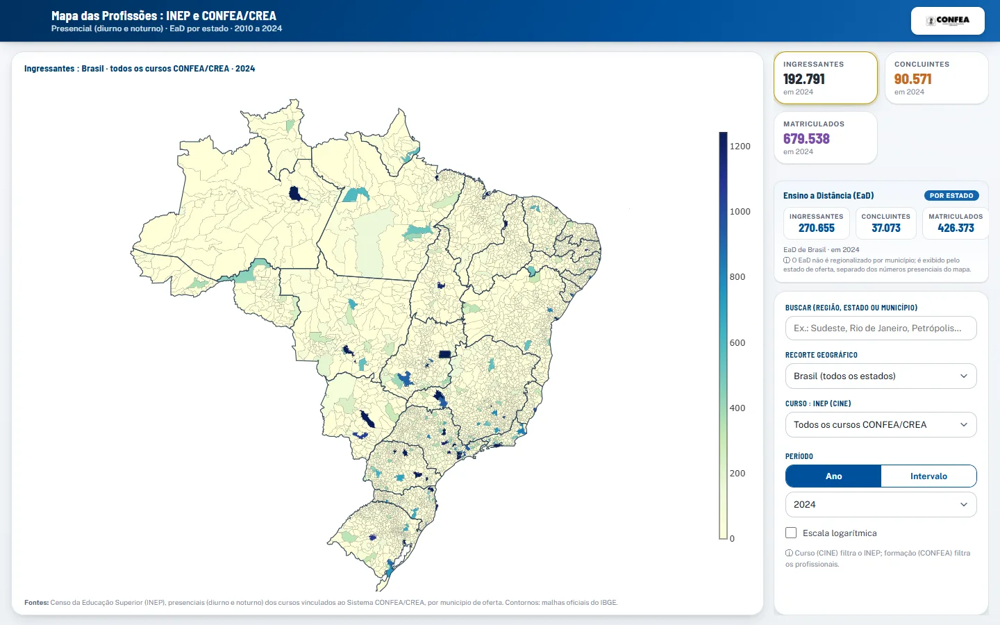
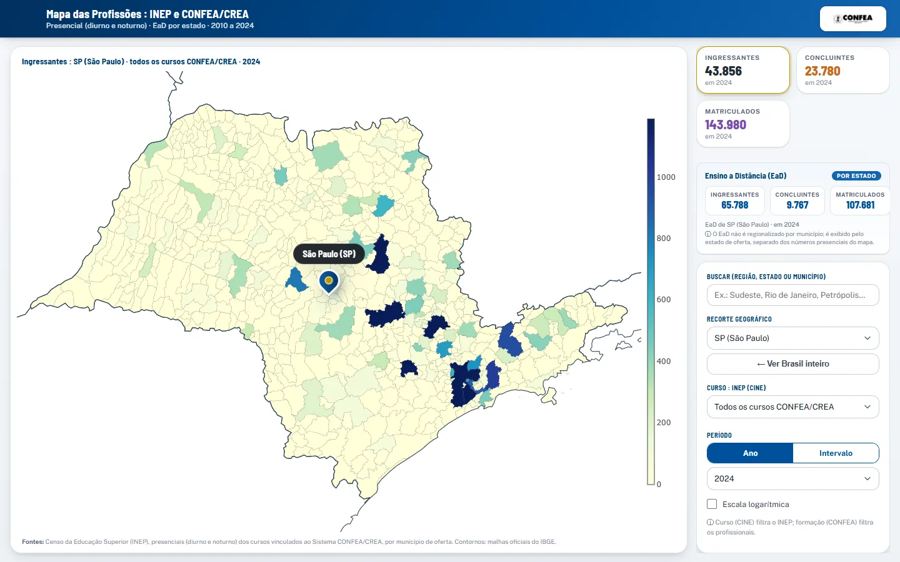
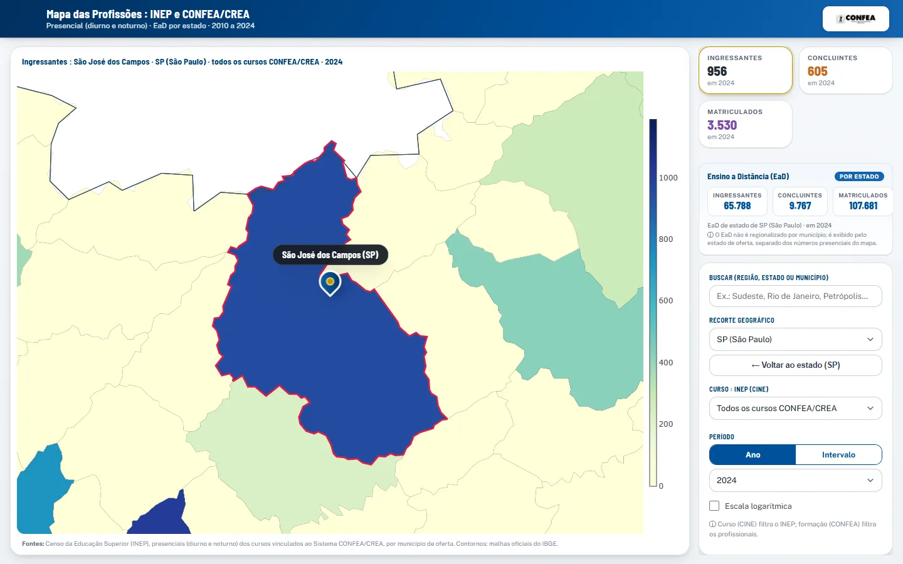
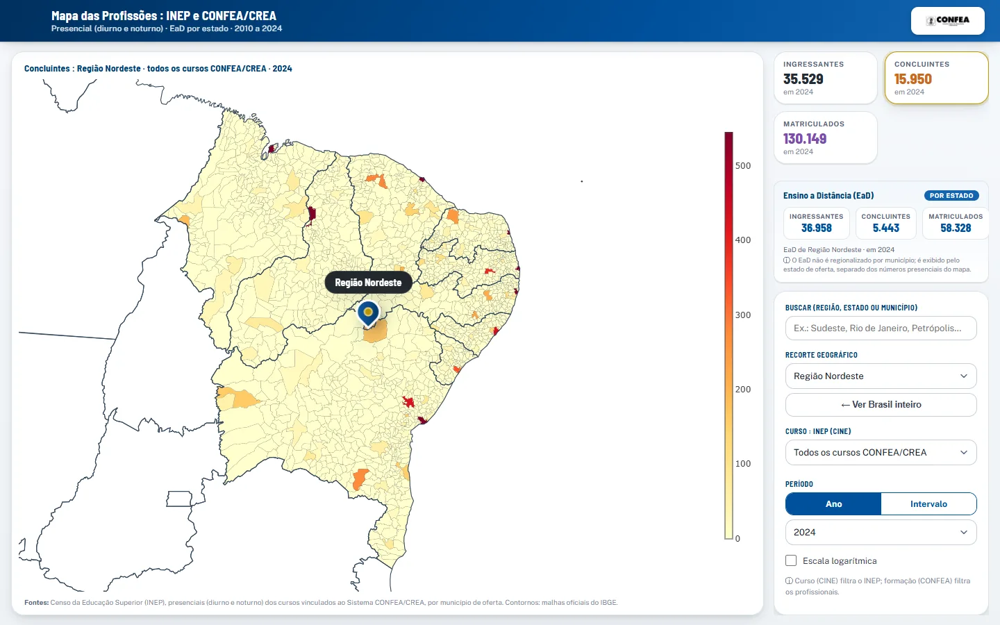
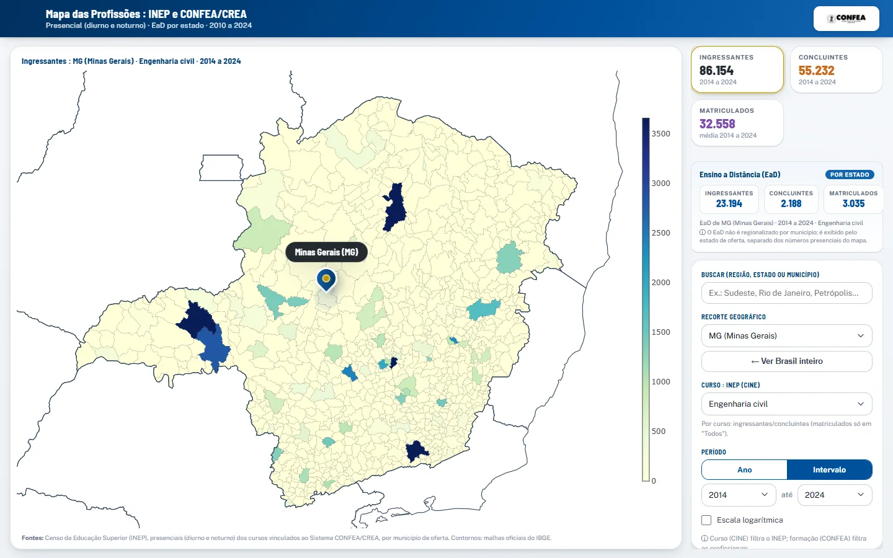
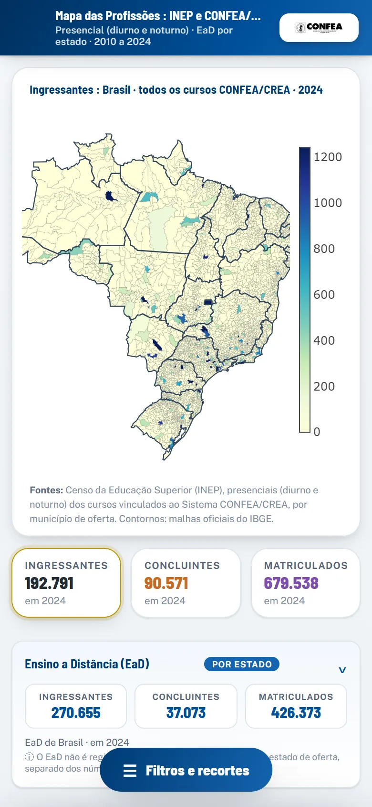

Mapa das profissões
Painel municipal com os cursos da área tecnológica e seus ingressantes e concluintes, de 2010 a 2024, separando presencial e EaD. Feito para o CONFEA.
- Instituição
- CONFEA
- Fonte
- INEP, Censo da Educação Superior
- Período
- 2010 a 2024
- Saída
- Painel e Excel
3.175municípios com curso presencial de 2010 a 2024
125cursos (códigos CINE)
420combinações de ano e UF conferidas
463.562ingressantes em 2024
Telas
Painel gerado a partir dos dados salvos do pipeline, sem os dados de profissionais.










No celular


Fluxo de páginas
Entrada
Mapa do Brasilingressantes do último ano
Recorte
Buscaregião, estado ou município
ListaBrasil, 5 regiões, 27 UFs
Clique no mapaaproxima o território
Filtros
Curso125 cursos ou todos
Períodoum ano ou intervalo
Escalalinear ou logarítmica
Saída
Mapacor por município
Cartõesingressantes, concluintes, matriculados
EaDpor estado, separado do mapa
Os cartões trocam a métrica do mapa.
Fluxo do processo
Entrada
Microdados do INEPCenso da Educação Superior, 2010 a 2024
Filtro de cursos125 códigos CINE do Sistema Confea/Crea
Agregação
Presencialpor município
EaDpor UF de oferta
Malhas
IBGE5.570 municípios de referência
Conferência
Cursos = município3.175 municípios
Municípios = UF420 combinações
Saída
HTML único18,8 MB, dados e malhas embutidos
Excelmesmas tabelas
Presencial e EaD
Ingressantes nos cursos da área, Brasil
O EaD passou o presencial em 2022 (233.054 contra 206.211).
Achados
6,1% para 58,4%
parte do EaD nos ingressantes, de 2010 para 2024
-24,9%
ingressantes presenciais de 2010 para 2024 (256.668 para 192.791)
869 para 2.940
municípios com curso presencial, de 2010 para 2024
98,73%
dos profissionais casados a um município do IBGE (1.554.461 de 1.574.484)
Conferência
- Cursos e municípioA soma dos cursos é igual ao total do município em ingressantes, concluintes e matriculados.
- Municípios e UFA soma dos municípios é igual ao total presencial da UF em cada ano.
- Total oficialPresencial mais EaD é igual ao total oficial do INEP em cada ano e UF.
- ProfissionaisExtraídos e casados por município, mas fora do painel publicado.
Tecnologias
PythonpandasPlotlyIBGE